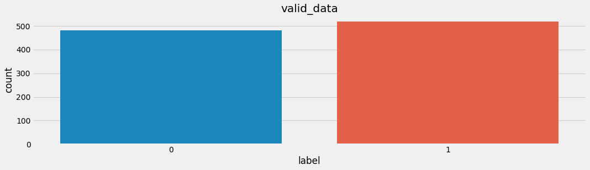
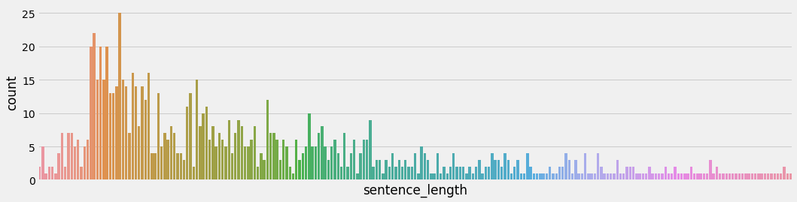
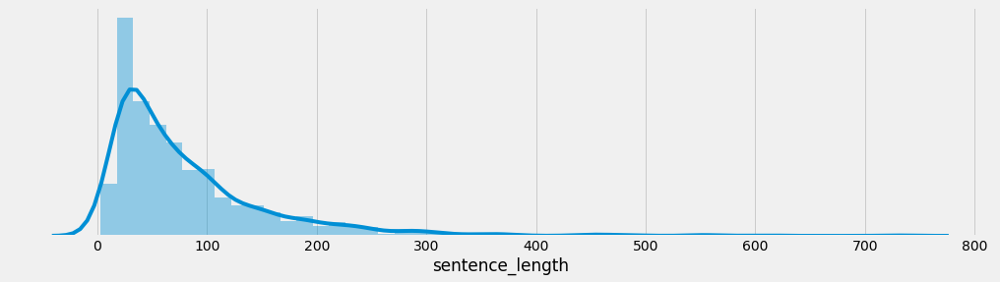
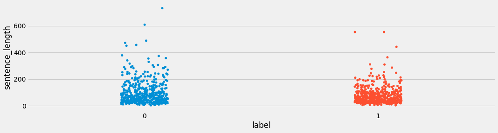

4 文本数据分析
学习目标¶
- 了解文本数据分析的作用.
- 掌握常用的几种文本数据分析方法.
1 文件数据分析介绍¶
-
文本数据分析的作用:
- 文本数据分析能够有效帮助我们理解数据语料, 快速检查出语料可能存在的问题, 并指导之后模型训练过程中一些超参数的选择.
-
常用的几种文本数据分析方法:
- 标签数量分布
- 句子长度分布
- 词频统计与关键词词云
2 数据集说明¶
-
我们将基于真实的中文酒店评论语料来讲解常用的几种文本数据分析方法.
-
中文酒店评论语料:
- 属于二分类的中文情感分析语料, 该语料存放在"./cn_data"目录下.
- 其中train.tsv代表训练集, dev.tsv代表验证集, 二者数据样式相同.
-
train.tsv数据样式:
sentence label
早餐不好,服务不到位,晚餐无西餐,早餐晚餐相同,房间条件不好,餐厅不分吸烟区.房间不分有无烟房. 0
去的时候 ,酒店大厅和餐厅在装修,感觉大厅有点挤.由于餐厅装修本来该享受的早饭,也没有享受(他们是8点开始每个房间送,但是我时间来不及了)不过前台服务员态度好! 1
有很长时间没有在西藏大厦住了，以前去北京在这里住的较多。这次住进来发现换了液晶电视，但网络不是很好，他们自己说是收费的原因造成的。其它还好。 1
非常好的地理位置，住的是豪华海景房，打开窗户就可以看见栈桥和海景。记得很早以前也住过，现在重新装修了。总的来说比较满意，以后还会住 1
交通很方便，房间小了一点，但是干净整洁，很有香港的特色，性价比较高，推荐一下哦 1
酒店的装修比较陈旧，房间的隔音，主要是卫生间的隔音非常差，只能算是一般的 0
酒店有点旧，房间比较小，但酒店的位子不错，就在海边，可以直接去游泳。8楼的海景打开窗户就是海。如果想住在热闹的地带，这里不是一个很好的选择，不过威海城市真的比较小，打车还是相当便宜的。晚上酒店门口出租车比较少。 1
位置很好，走路到文庙、清凉寺5分钟都用不了，周边公交车很多很方便，就是出租车不太爱去（老城区路窄爱堵车），因为是老宾馆所以设施要陈旧些， 1
酒店设备一般，套房里卧室的不能上网，要到客厅去。 0
- train.tsv数据样式说明:
- train.tsv中的数据内容共分为2列, 第一列数据代表具有感情色彩的评论文本; 第二列数据, 0或1, 代表每条文本数据是积极或者消极的评论, 0代表消极, 1代表积极.
3 获取标签数量分布¶
# 导入必备工具包
import seaborn as sns
import pandas as pd
import matplotlib.pyplot as plt
# 思路分析 : 获取标签数量分布
# 0 什么标签数量分布：求标签0有多少个 标签1有多少个 标签2有多少个
# 1 设置显示风格plt.style.use('fivethirtyeight')
# 2 pd.read_csv(path, sep='\t') 读训练集 验证集数据
# 3 sns.countplot() 统计label标签的0、1分组数量
# 4 画图展示 plt.title() plt.show()
# 注意1：sns.countplot()相当于select * from tab1 group by
def dm_label_sns_countplot():
# 1 设置显示风格plt.style.use('fivethirtyeight')
plt.style.use('fivethirtyeight')
# 2 pd.read_csv 读训练集 验证集数据
train_data = pd.read_csv(filepath_or_buffer = './cn_data/train.tsv', sep='\t')
dev_data = pd.read_csv(filepath_or_buffer = './cn_data/dev.tsv', sep='\t')
# 3 sns.countplot() 统计label标签的0、1分组数量
sns.countplot(x='label', data = train_data)
# 4 画图展示 plt.title() plt.show()
plt.title('train_label')
plt.show()
# 验证集上标签的数量分布
# 3-2 sns.countplot() 统计label标签的0、1分组数量
sns.countplot(x='label', data = dev_data)
# 4-2 画图展示 plt.title() plt.show()
plt.title('dev_label')
plt.show()
- 训练集标签数量分布:

- 验证集标签数量分布:

- 分析:
- 在深度学习模型评估中, 我们一般使用ACC作为评估指标, 若想将ACC的基线定义在50%左右, 则需要我们的正负样本比例维持在1:1左右, 否则就要进行必要的数据增强或数据删减. 上图中训练和验证集正负样本都稍有不均衡, 可以进行一些数据增强.
4 获取句子长度分布¶
# 思路分析 : 获取句子长度分布 -绘制句子长度分布-柱状图 句子长度分布-密度曲线图
# 0 什么是句子长度分布：求长度为50的有多少个 长度51的有多少个 长度为52的有多少个
# 1 设置显示风格plt.style.use('fivethirtyeight')
# 2 pd.read_csv(path, sep='\t') 读训练集 验证集数据
# 3 新增数据长度列：train_data['sentence_length'] = list(map(lambda x:len(x) , ...))
# 4-1 绘制数据长度分布图-柱状图 sns.countplot(x='sentence_length', data=train_data)
# 画图展示 plt.xticks([]) plt.show()
# 4-2 绘制数据长度分布图-曲线图 sns.displot(x='sentence_length', data=train_data)
# 画图展示 plt.yticks([]) plt.show()
def dm_len_sns_countplot_distplot():
# 1 设置显示风格plt.style.use('fivethirtyeight')
plt.style.use('fivethirtyeight')
# 2 pd.read_csv 读训练集 验证集数据
train_data = pd.read_csv(filepath_or_buffer='./cn_data/train.tsv', sep='\t')
dev_data = pd.read_csv(filepath_or_buffer='./cn_data/dev.tsv', sep='\t')
# 3 求数据长度列 然后求数据长度的分布
train_data['sentence_length'] = list( map(lambda x: len(x), train_data['sentence']))
# 4 绘制数据长度分布图-柱状图
sns.countplot(x='sentence_length', data=train_data)
# sns.countplot(x=train_data['sentence_length'])
plt.xticks([]) # x轴上不要提示信息
# plt.title('sentence_length countplot')
plt.show()
# 5 绘制数据长度分布图-曲线图
sns.displot(x='sentence_length', data=train_data)
# sns.displot(x=train_data['sentence_length'])
plt.yticks([]) # y轴上不要提示信息
plt.show()
# 验证集
# 3 求数据长度列 然后求数据长度的分布
dev_data['sentence_length'] = list(map(lambda x: len(x), dev_data['sentence']))
# 4 绘制数据长度分布图-柱状图
sns.countplot(x='sentence_length', data=dev_data)
# sns.countplot(x=dev_data['sentence_length'])
plt.xticks([]) # x轴上不要提示信息
# plt.title('sentence_length countplot')
plt.show()
# 5 绘制数据长度分布图-曲线图
sns.displot(x='sentence_length', data=dev_data)
# sns.displot(x=dev_data['sentence_length'])
plt.yticks([]) # y轴上不要提示信息
plt.show()
- 训练集句子长度分布:


- 验证集句子长度分布:


- 分析:
- 通过绘制句子长度分布图, 可以得知我们的语料中大部分句子长度的分布范围, 因为模型的输入要求为固定尺寸的张量，合理的长度范围对之后进行句子截断补齐(规范长度)起到关键的指导作用. 上图中大部分句子长度的范围大致为20-250之间.
5 获取正负样本长度散点分布¶
# 获取正负样本长度散点分布，也就是按照x正负样本进行分组 再按照y长度进行散点图
# train_data['sentence_length'] = list(map(lambda x: len(x), train_data['sentence']))
# sns.stripplot(y='sentence_length', x='label', data=train_data)
def dm03_sns_stripplot():
# 1 设置显示风格plt.style.use('fivethirtyeight')
plt.style.use('fivethirtyeight')
# 2 pd.read_csv 读训练集 验证集数据
train_data = pd.read_csv(filepath_or_buffer='./cn_data/train.tsv', sep='\t')
dev_data = pd.read_csv(filepath_or_buffer='./cn_data/dev.tsv', sep='\t')
# 3 求数据长度列 然后求数据长度的分布
train_data['sentence_length'] = list(map(lambda x: len(x), train_data['sentence']))
# 4 统计正负样本长度散点图 （对train_data数据，按照label进行分组，统计正样本散点图）
sns.stripplot(y='sentence_length', x='label', data=train_data)
plt.show()
sns.stripplot(y='sentence_length', x='label', data=dev_data)
plt.show()
- 训练集上正负样本的长度散点分布:

- 验证集上正负样本的长度散点分布:

- 分析:
- 通过查看正负样本长度散点图, 可以有效定位异常点的出现位置, 帮助我们更准确进行人工语料审查. 上图中在训练集正样本中出现了异常点, 它的句子长度近3500左右, 需要我们人工审查.
6 获取不同词汇总数统计¶
# 导入jieba用于分词
# 导入chain方法用于扁平化列表
import jieba
from itertools import chain
# 进行训练集的句子进行分词, 并统计出不同词汇的总数
train_vocab = set(chain(*map(lambda x: jieba.lcut(x), train_data["sentence"])))
print("训练集共包含不同词汇总数为：", len(train_vocab))
# 进行验证集的句子进行分词, 并统计出不同词汇的总数
valid_vocab = set(chain(*map(lambda x: jieba.lcut(x), valid_data["sentence"])))
print("训练集共包含不同词汇总数为：", len(valid_vocab))
- 输出效果:
训练集共包含不同词汇总数为： 12147
训练集共包含不同词汇总数为： 6857
7 获取训练集高频形容词词云¶
# 使用jieba中的词性标注功能
import jieba.posseg as pseg
from wordcloud import WordCloud
# 每句话产生形容词列表
def get_a_list(text):
r = []
# 使用jieba的词性标注方法切分文本 找到形容词存入到列表中返回
for g in pseg.lcut(text):
if g.flag == "a":
r.append(g.word)
return r
# 根据词云列表产生词云
def get_word_cloud(keywords_list):
# 实例化词云生成器对象
wordcloud = WordCloud(font_path="./SimHei.ttf", max_words=100, background_color='white')
# 准备数据
keywords_string = " ".join (keywords_list)
# 产生词云
wordcloud.generate(keywords_string)
# 画图
plt.figure()
plt.imshow(wordcloud, interpolation="bilinear")
plt.axis('off')
plt.show()
# 思路分析 训练集正样本词云 训练集负样本词云
# 1 获得训练集上正样本 p_train_data
# eg: 先使用逻辑==操作检索符合正样本 train_data[train_data['label'] == 1]
# 2 获取正样本的每个句子的形容词 p_a_train_vocab = chain(*map(a,b))
# 3 调用绘制词云函数
def dm_word_cloud():
# 1 获得训练集上正样本p_train_data
# eg: 先使用逻辑==操作检索符合正样本 train_data[train_data['label'] == 1]
train_data = pd.read_csv(filepath_or_buffer='./cn_data/train.tsv', sep='\t')
p_train_data = train_data[train_data['label'] == 1 ]['sentence']
# 2 获取正样本的每个句子的形容词 p_a_train_vocab = chain(*map(a,b))
p_a_train_vocab = chain(*map(lambda x: get_a_list(x) , p_train_data))
# print(p_a_train_vocab)
# print(list(p_a_train_vocab))
# 3 调用绘制词云函数
get_word_cloud(p_a_train_vocab)
print('*' * 60 )
# 训练集负样本词云
n_train_data = train_data[train_data['label'] == 0 ]['sentence']
# 2 获取正样本的每个句子的形容词 p_a_train_vocab = chain(*map(a,b))
n_a_train_vocab = chain(*map(lambda x: get_a_list(x) , n_train_data) )
# print(n_a_dev_vocab)
# print(list(n_a_dev_vocab))
# 3 调用绘制词云函数
get_word_cloud(n_a_train_vocab)
- 训练集正样本形容词词云:
- 训练集负样本形容词词云:
8 获取验证集形容词词云¶
# 获得验证集上正样本
p_valid_data = valid_data[valid_data["label"]==1]["sentence"]
# 对正样本的每个句子的形容词
valid_p_a_vocab = chain(*map(lambda x: get_a_list(x), p_valid_data))
#print(train_p_n_vocab)
# 获得验证集上负样本
n_valid_data = valid_data[valid_data["label"]==0]["sentence"]
# 获取负样本的每个句子的形容词
valid_n_a_vocab = chain(*map(lambda x: get_a_list(x), n_valid_data))
# 调用绘制词云函数
get_word_cloud(valid_p_a_vocab)
get_word_cloud(valid_n_a_vocab)
- 验证集正样本形容词词云:

- 验证集负样本形容词词云:
- 分析:
- 根据高频形容词词云显示, 我们可以对当前语料质量进行简单评估, 同时对违反语料标签含义的词汇进行人工审查和修正, 来保证绝大多数语料符合训练标准. 上图中的正样本大多数是褒义词, 而负样本大多数是贬义词, 基本符合要求, 但是负样本词云中也存在"便利"这样的褒义词, 因此可以人工进行审查.
9 小结¶
-
学习了文本数据分析的作用:
- 文本数据分析能够有效帮助我们理解数据语料, 快速检查出语料可能存在的问题, 并指导之后模型训练过程中一些超参数的选择.
-
学习了常用的几种文本数据分析方法:
- 标签数量分布
- 句子长度分布
- 词频统计与关键词词云
-
学习了基于真实的中文酒店评论语料进行几种文本数据分析方法.
- 获得训练集和验证集的标签数量分布
- 获取训练集和验证集的句子长度分布
- 获取训练集和验证集的正负样本长度散点分布
- 获得训练集与验证集不同词汇总数统计
- 获得训练集上正负的样本的高频形容词词云